第一章 操作系统引论 第二章 进程的描述与控制 第三章 处理机调度与死锁 第四章 进程同步 第五章 存储器管理 第六章 虚拟存储器 第七章 输入/输出系统 第八章 文件管理 第九章 磁盘存储器管理
1 处理机调度概述1.1 调度层次1.2 作业1.3 进程调度1.3.1 进程的调度任务1.3.2 进程调度机制1.3.3 进程调度方式1.3.4 调度队列模型1.3.5 对调度算法的分析2 调度算法2.1 概述2.2 先来先服务调度算法FCFS2.3 最短作业优先SJF2.4 优先级调度算法PR2.5 高响应比优先调度算法HRRN作业调度算法实例1作业调度算法实例22.6 时间片轮转调度算法2.7 多级反馈队列调度算法3 实时调度3.1 实时调度算法分类3.2 调度算法3.2.1 非抢占式非抢占式轮转调度算法非抢占式优先调度算法3.2.2 抢占式基于时钟中断的抢占式优先级调度立即抢占的优先级调度3.3 最早截止时间优先（EDF）调度算法3.4 最低松弛度优先LLF算法优先级倒置现象4 Linux进程调度5 死锁概述5.1 死锁的定义5.2 产生死锁的四个必要条件5.3 处理死锁的基本方法5.3.1 预防死锁5.3.2 避免死锁系统的安全状态著名避免死锁算法-银行家算法实例5.3.3 死锁的检测与解除资源分配图资源分配图化简死锁定理死锁解除
处理机调度问题就是对处理机如何分配的问题
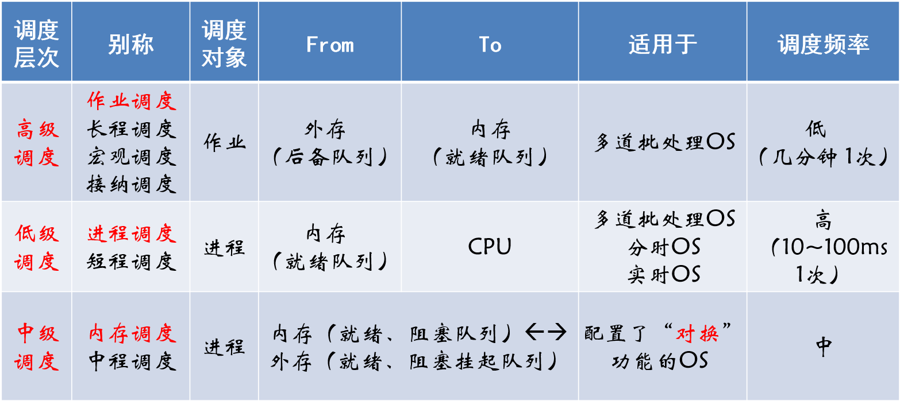
作业(job)=程序+数据+作业说明书 作业步(Job step)：作业加工的步骤 作业控制块JCB(Job control block)：作业标识、用户名称、作业类型、作业状态、调度信息、资源需求等
为管理和调度作业，在多道批处理系统中，为每个作业设置了一个作业控制块JCB，它是作业在系统中存在的标志，其中保存了系统对作业进行管理和调度所需的全部信息。通常在JCB中包含的内容有：作业标识、用户名称、用户账号、作业类型（CPU繁忙型、I/O繁忙型、批量型、终端型）、作业状态、调度信息（优先级、作业运行时间）、资源需求（预计运行时间、要求内存大小等）、资源使用情况等。
作业三阶段/三状态：收容/后备、运行、完成
作业调度又称为接纳调度(Admission Scheduling)，接纳度表示接纳多少个作业，调度算法决定接纳哪些作业。
保护处理机的现场信息、按某种算法选取进程、把处理器分配给进程。
单级调度队列模型：进程调度 二级调度队列模型：进程调度+作业调度 三级调度队列模型：进程调度+作业调度+内存调度
处理机调度算法的共同目标：资源利用率（CPU利用率=CPU有效工作时间 / (CPU有效工作时间+CPU空闲时间)）、公平性、平衡性、策略强制执行
批处理系统的目标：平均周转时间短（周转时间、平均周转时间、带权周转时间、平均带权周转时间）、系统吞吐率要高
周转时间Ti：是指作业提交给系统开始，到作业完成为止的这段时间间隔。即：Ti = 完成时间 - 提交时间 平均周转时间：
带权周转时间： 平均带权周转时间：
分时系统的目标：响应时间快、均衡性
实时系统的目标：保证截止时间、保证
作业调度算法：先来先服务调度算法(FCFS)、短作业优先调度算法(SJF)、优先权调度算法(PR)、高响应比优先调度算法(HRRN)
进程调度算法：先来先服务调度算法(FCFS)、短作业优先调度算法(SJF)、优先权调度算法(PR)、时间片轮转调度算法(RR)、多级队列调度算法、多级反馈队列调度算法、基于公平原则的调度算法
是最简单的一种调度算法，即可用于作业调度，也可以用于进程调度。
算法特征：
按作业估计运行时间长短来组织后备作业调度，优先分派处理机。但通常后来的短作业 正在执行的作业。
基于作业/进程的紧迫程度，由外部赋予作业相应的优先级，调度算法根据优先级进行调度。每个进程都有一个优先数（整数），小的优先数具有高优先级。是目前主流的操作系统调度算法。
优先级类型分为两种： 静态优先级：创建进程时确定优先级，在进程的整个运行期间保持不变，简单易行，系统开销小。不够精确，可能会出现优先级低的进程长期没有被调度的情况。 动态优先级：创建进程时先赋予优先级，随进程推进或等待时间增加而改变。
高响应比优先调度算法(HRRN)是一种优先级调度算法，用于作业调度。
这里的优先权是响应比Rp
HRRN是FCFS和SJF两种算法的一种折中算法，比较好的满足了短作业用户和长作业用户的要求。但吞吐量比SJF小，计算 Rp 会增加系统开销。
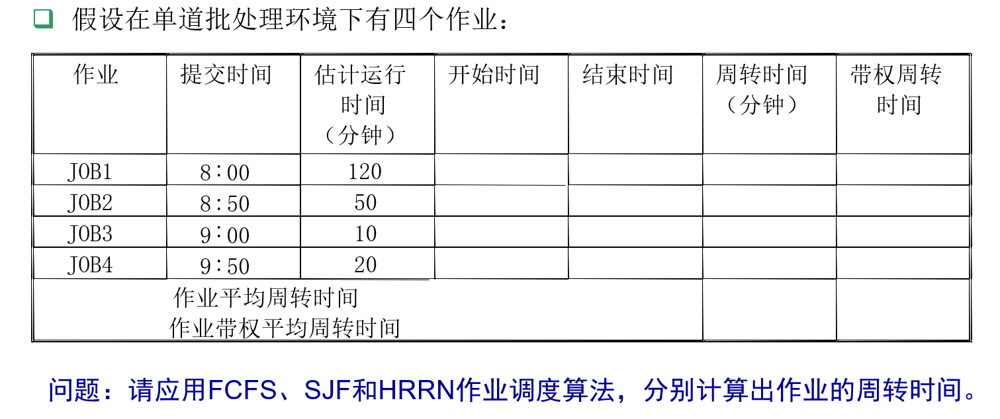
FCFS调度算法结果: 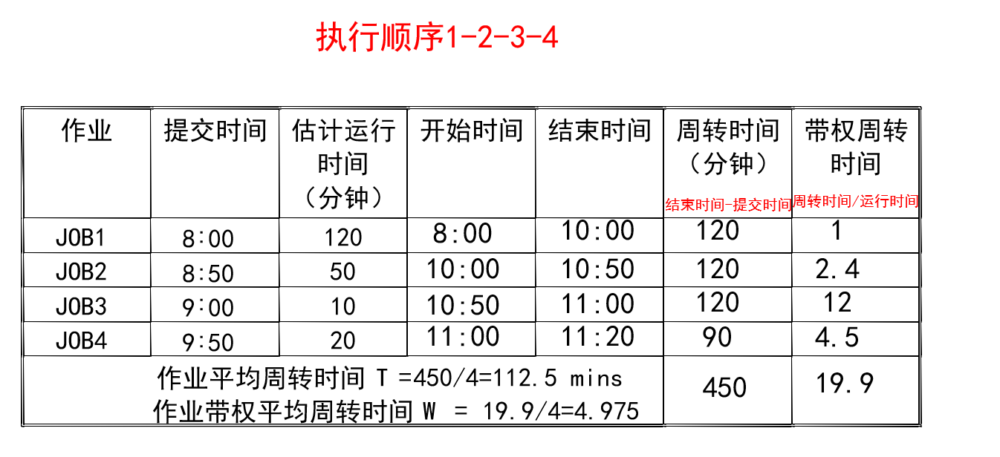
SJF调度算法结果： 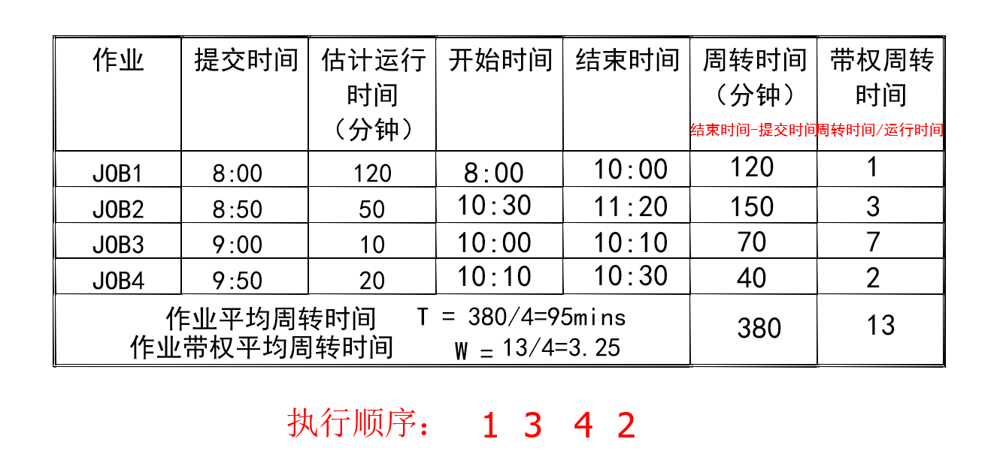
HRRN调度算法计算结果： 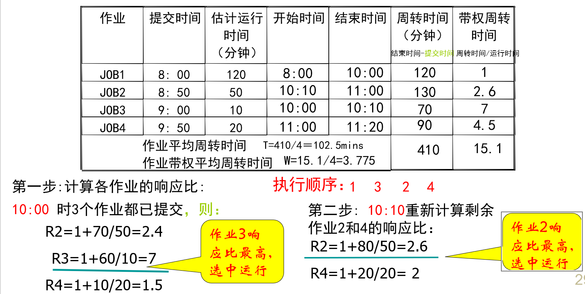
三种算法的比较：
| 算法 | 平均周转时间 | 代权平均周转时间 |
|---|---|---|
| FCFS | 112.5 | 4.975 |
| SJF | 95 | 3.25 |
| HRRN | 102.5 | 3.775 |
分析：SJF算法平均周转时间最短，但可能使长时间长作业等待；HRRN算法，既考虑时间长短，又考虑等待时间，在长、短作业之间进行了适当的均衡，其平均周转时间介于FCFS和SJF之间。
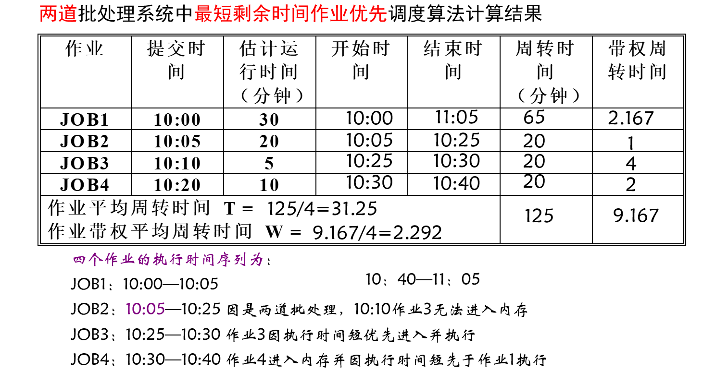
把CPU划分成若干时间片，并且按顺序赋给就绪队列中的每一个进程，进程轮流占用CPU。通过时间片轮转，提高进程并发性和响应时间特性，从而提高资源利用率。
时间片选择问题：固定时间片、可变时间片
简单循环轮转调度算法：时间片：
时间片大小从几个ms~几百ms
时间片轮转调度算法实例（时间片=1）
时间片轮转调度算法实例（时间片=5） 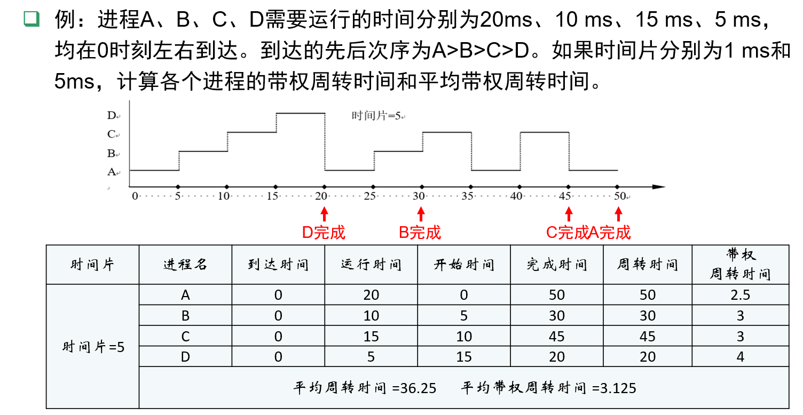
多级反馈队列算法是时间片轮转算法和优先级算法的总和和发展。
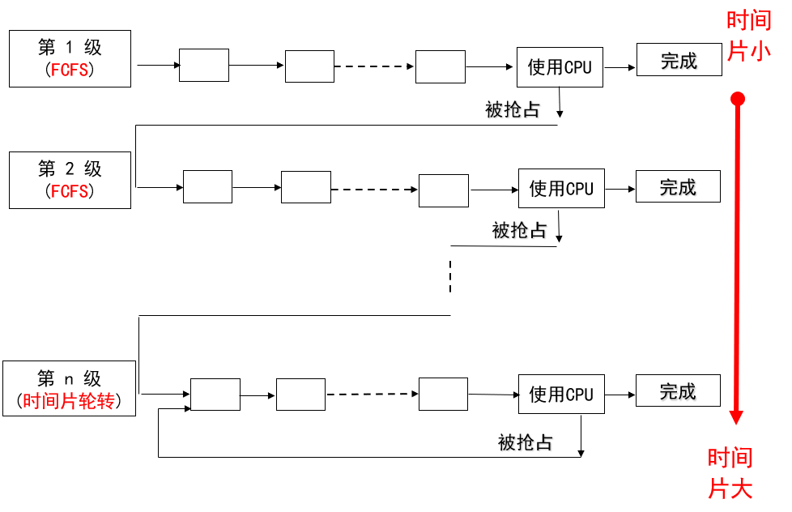
设置多个就绪队列：每个就绪队列分配给不同时间片，优先级高的为第一级队列，时间片最小，随队列级别的降低，时间片加大；当第一级队列空时，就调度第二级队列，如此类推；各个队列按照先进先出调度算法，最后一级采用时间片轮转。一个新进程就绪后进入第一级队列，进程由于等待而放弃CPU后，进入等待队列，一旦等待的事件发生，则回到原来的就绪队列；当时间片到后，进程放弃CPU，进入下一级队列；当有一个优先级更高的进程就绪时，可以抢占CPU，被抢占的进程回到原来一级的就绪队列末尾。
优点：照顾短进程、照顾I/O型进程、不必估计进程的执行时间
根据实时任务性质：HRT调度算法、SRT调度算法 根据调度方式：非抢占式调度算法、抢占式调度算法
响应时间：数秒至数十秒 要求不太严格的实时系统
响应时间：数秒至数百毫秒 对时间有一定要求的实时系统
响应时间：几十毫秒至几毫秒 可用于大多数实时系统
响应时间：几毫秒至几百微秒 有严格时间要求的实时系统
EDF根据任务的截止时间确定优先级，截止时间越早，优先级越高；既可用于抢占式调度（周期实时任务），也可用于非抢占式调度（用于非周期实时任务）。
根据任务的紧急程度（松弛度）确定任务优先级，紧急程度越高（松弛度越低），优先级越高；松弛度=必须完成时间-其本身的运行时间-当前时间
主要用在抢占式调度方式中。
采用优先级调度和抢占方式，可能产生优先级倒置。现象：高优先级进程被低优先级进程延迟或阻塞。
解决办法：制定一些规定，如规定低优先级进程执行后，其所占用的处理机不允许被抢占；建立动态优先级继承。
默认调度算法：完全公平调度CFS算法。
基于调度器类：允许不同的可动态添加的调度算法并存，每个类都有一个特定的优先级。
普通进程调度：
实时进程调度：
引起死锁的原因：
一组并发进程彼此无休止地等待对方占用的资源，从而造成不能继续向前推进的状态，称为进程死锁(Deadlock)，这一组进程就称为死锁进程。
分析：
说明：上述四个条件只要有一个不满足，就可排除死锁。但必要条件成立，系统未必一定发生死锁。
破坏死锁的四个必要条件中的一个或几个。
在资源动态分配时，防止系统进入不安全状态。
方法： 设一个简单而有效的模型，要求每一个进程声明它所需要的资源的最大数；死锁避免算法动态检查资源分配状态以确保不会出现循环等待的情况；资源分配状态定义为可用的与已分配的资源数，和进程所需的最大资源量。
在“避免死锁”的方法中的判断条件。 安全状态：按某种顺序所有进程都能达到获得最大资源而顺序完成的序列为安全序列，能找到安全序列的状态为安全状态。 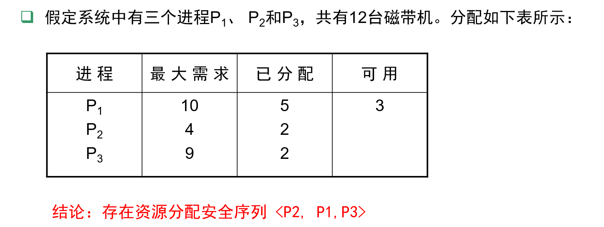
由Dijkstra于1965年首先提出并解决。 问题：如何将其总数一定的现金，安全地借给若干个顾客，使这些顾客既能满足对资金的要求，又能完成其交易，也使银行家可以收回自己的全部现金而不至于破产。这类似于OS中的资源分配问题：在若干个并发进程间分配单位数量一定的某共享资源。
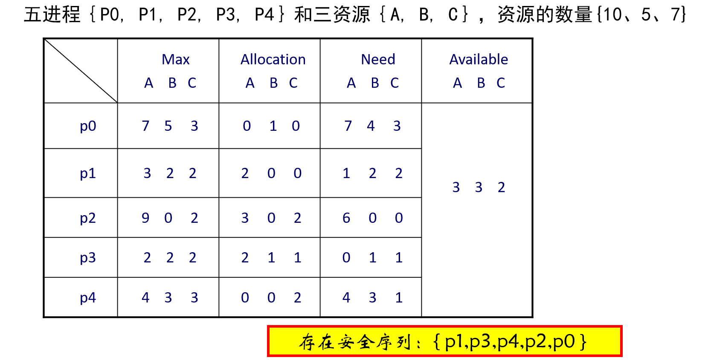
检测死锁：事先不采取任何措施，允许死锁发生，但及时检测死锁发生。
解除死锁：检测到死锁发生时，采取相应措施，将进程从死锁状态中解脱出来。 死锁的预防策略是非常保守的，通过限制访问资源和在进程上强加约束来解决死锁问题。 死锁检测（deadlock detection)策略则完全相反，不限制资源访问或约束进程行为，OS周期性地执行一个算法检测死锁发生的四个必要条件。即：允许死锁发生，OS不断监视系统进展情况，判断并以最小的代价恢复操作系统运行。
节点
边
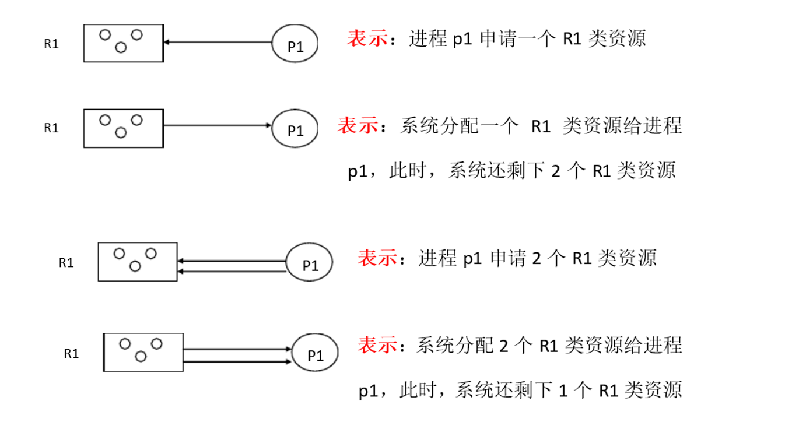
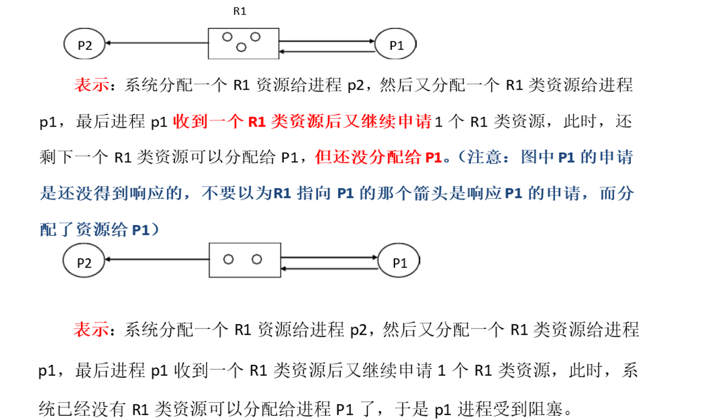
在一个资源分配图中，若某进程的资源申请都能被满足，完成任务，释放所占有的全部资源，则称该图可以被该进程化简。若该图可被其所有进程化简，则称该图是可化简的。
资源分配图化简方法： （1）找到一个既非阻塞又非孤立的进程节点Pi，去掉请求边和分配边，将其变为孤立节点； （2）把Pi释放的资源分配给申请等待该资源的进程，即将某进程的申请边变为分配边。 （3）重复1，2，直到找不到符合条件的进程节点。经过简化后，若能消去图的所有边，使所有进程都成为孤立点，则该图是可完全化简的。 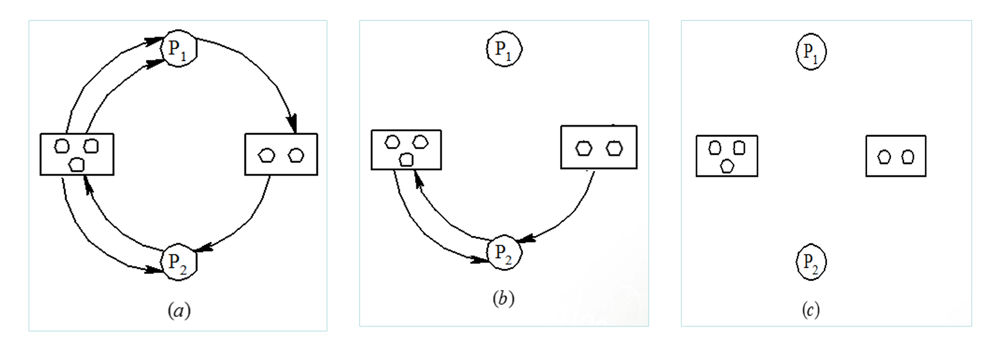
如果资源分配图中没有环路，则系统中没有死锁，如果图中存在环路则系统中可能存在死锁。如果每个资源类中只包含一个资源实例，则环路是死锁存在的充分必要条件。
死锁定理：死锁状态的充分条件，是资源分配图不可完全化简。
（1）重新启动 （2）进程回退：将死锁进程退回到前一个检查点，并重新从该检查点启动这些进程（需系统提供检查点和重新启动机制）。有可能使原来的死锁再次发生，但由于并发处理系统的不确定性，通常死锁有可能不发生。 （3）剥夺资源：使用挂起/激活机制挂起一些进程，剥夺他们占有的资源给死锁进程，以解除死锁，待以后条件满足时再激活被挂起的进程。 （4）撤销进程：撤销死锁进程，将它们占有的资源分配给另一些死锁进程，直到死锁解除。